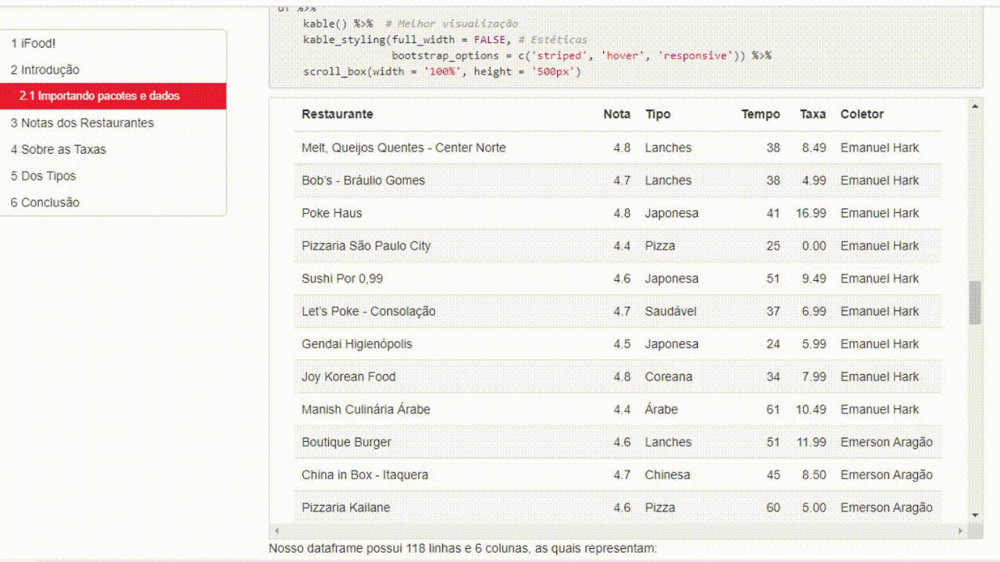

ifood!
Olá! Essa página descreve um projeto que desenvolvi.
Ele envolveu vários conhecimentos relacionados à ciência de dados - como Web Scraping, limpeza de dados e análise exploratória: jajá eu explico direitinho o que são esses termos hehe. Utilizei ferramentas em Python, para coleta e limpeza, e em R, para análise e documentação.
Esta página tem intutito de descrever os passos realizados de forma mais superficial.
Caso queira se aprofundar e verificar mais a fundo na documentação oficial do projeto, aqui está o link para o repositório no GitHub, em que tudo está bem documentadinho. A análise final dos dados se encontra neste link.
Let's go!
Motivação
Em conjunto com o time da IME Jr., empresa júnior do Instituto de Matemática e Estatística da USP, realizou-se a coleta de dados relativos a restaurantes nas proximidades de cada um dos integrantes, pelo site do ifood. Em seguida, limpei e juntei dados coletados por outros integrantes para realizar uma análise exploratória.
O projeto, portanto, pode ser dividido em algumas etapas básicas, que serão discutos nos próximos tópicos:
- 1. Coleta
- 2. Limpeza e junção
- 3. Análise
1. Coleta
- - Ferramentas utilizadas: Python & Selenium
- - Link para o código: web-scraper.py
- - Link para os dados coletados: scraped-data.csv
Uma pergunta: como você coletaria dados (nome, nota, tipo, etc.) sobre os restaurantes da sua região? Iria num site de restaurantes e iria ver um por um, não? I guess so.
E se eu quisesse coletar dados de 100 restaurates, por exemplo? Demoraria hein. Até anotar o nome dos 100 restaurantes e as notas, por exemplo, a minha mão ia cair. Por isso, utlizei Python pra acelerar o processo pra gente.
Vejamos como podemos coletar dados do seguinte site do ifood:

Tem muitos restaurantes aí, né. E cada "box" tem algumas informações interessantes sobre cada restaurante, como a nota dele no site, o tipo de comida que ele vende e etc. Eu estava interessado em fazer uma planilha do Excel mais ou menos assim
| Restaurante | Nota | Tipo de comida | Distancia | Tempo | Taxa de entrega |
|---|---|---|---|---|---|
| Gokei - Carrão | 4.6 | Japonesa | 0.9 | 59-69 min | 0.0 |
| Pikurruchas Tatuapé | 4.7 | Doces & Bolos | 2.3 | 34-44 min | 6.99 |
| Mussa Esfiha - Anália Franco | 4.7 | Árabe | 2.1 | 23-33 min | 7.99 |
| Sassá Sushi - Tatuapé | 4.4 | Japonesa | 3.8 | 41-51 min | 10.49 |
| Meats - Anália Franco | 4.7 | Lanches | 2.6 | 22-32 min | 6.99 |
| ... | ... | ... | ... | ... | ... |
com muitos restaurantes. Para isso, utilizei programação pra fazer esse trabalho mais "braçal", de anotar o nome do restaurante, a nota dele, e etc. Um dia eu faço um post mais detalhado sobre esse processo, conhecido como Web Scraping (Raspagem da Web, em português), por aqui.
Mas, basicamente, devemos dar instruções pra um programa do tipo:
notas dos restaurantes = lista vazia
tipos dos restaurantes = lista vazia
distancias = lista vazia
tempos = lista vazia
taxas de entrega = lista vazia
rode isso para todo box que você encontrar:
pegue o nome do restaurante e adicione na lista dos nomes
pegue a nota do restaurante e adiciona na lista das notas
...
e no final, fazer uma planilha do Excel, e que cada coluna é uma dessas listas.
O processo está mais detalhado neste código, disponível no meu GitHub.
Enfim, coletei dados de mais de 100 restaurantes com algumas linhas de código, e gerei esse arquivo .csv, que é uma planilha do Excel em formato de texto - dá pra abrir pelo Excel, se você quiser :D
2. Limpeza e Junção
- - Ferramentas utilizadas: Python: pandas & numpy
- - Link para o código: cleaning-data.ipynb
- - Link para os dados juntados e limpos: final-ifood-data.csv
Uma vez que este projeto foi realizado com a equipe da grandíssima IME Jr., cada membro também realizou um processo de Web Scraping e gerou um arquivo csv. Porém, os dados não estavam tão agradáveis - então, foi necessária uma limpeza antes de juntar os dados de cada um.
Mas o que são dados não-limpos? Faço um post sobre isso aqui no site em breve.
Acho que o notebook fala por si só sobre o processo. Enfim, no final do processo gerei um arquivo csv juntando 3 outros conjuntos de dados de colegas para minha análise, resultando em quase 120 restaurante.
3. Análise
- - Ferramentas utilizadas: R, tidyverse (ggplot2, magrittr, etc.)
- - Link para o código: ifood-final-eda.Rmd
- - Link para a análise final: final-ifood-data.csv
Acho que a própria análise fala mais sobre ela do que qualquer coisa falando sobre a análise.

Conclusões
Você pode ver todo o processo desse projeto neste repositório.
Em relação à coleta de dados, utilizei Python. Porém, poderia ter utilizado pacotes em R, como httr. Mas já tinha familiaridade com Selenium, ele satisfaz bem minhas necessidades.
Em relação à limpeza e junção de dados, sou mais fã de R - porém, optei por realizar esta seção em Python para desenvolver um pouco minhas habilidades.
Por fim, na parte de visualização e exploração, não houve dúvidas: R. Adoro trabalhar com o tidyverse (dplyr, ggplot2, magrittr, etc.) - não que eu não goste de pandas, matplotlib e afins, mas prefiro muito os pacotes em R. Este projeto envolveu diversos conhecimentos e habilidades interessantes. Gostei de aplicar princípios do livro "Storytelling com Dados", da Cole Nussbaumer Knaflic na parte de visualização.
Por fim, é isso. Obrigado pela leitura :D
Kenzo.